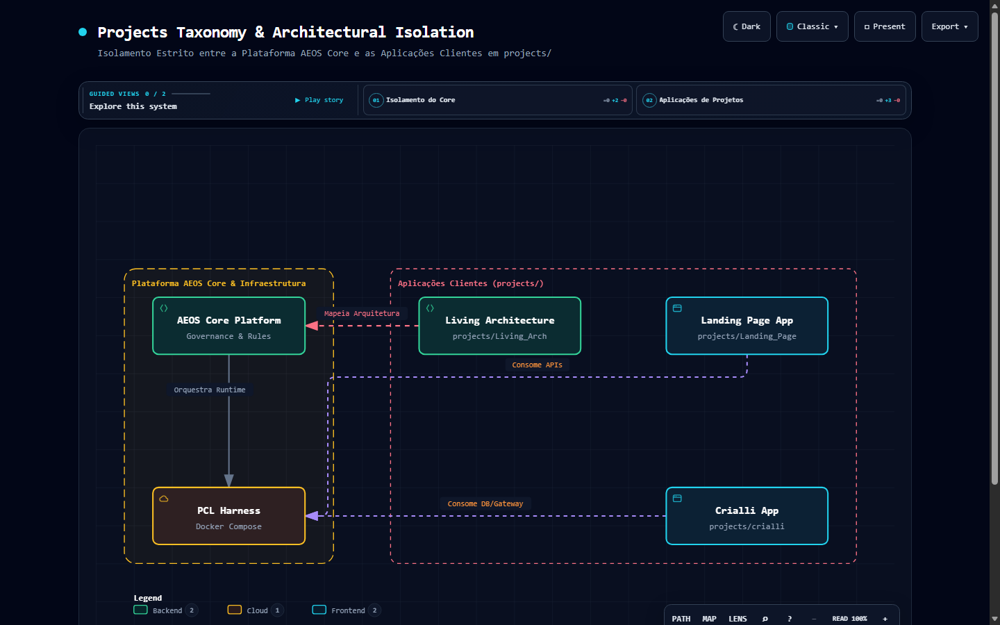

👔 Visão Executiva & Valor de Negócio (Para Líderes, Diretores e Investidores):
O PCL Cockpit v3.8 consolida a maturidade plena do ecossistema soberano corporativo. Em rigorosa Avaliação Técnica Duplo-Cega Imparcial (onde especialistas avaliaram respostas sem saber a marca da IA), superou todas as plataformas comerciais globais com 4.95 / 5.0. Enquanto serviços externos impõem faturas em dólar por usuário e dependência de caixas-pretas:
- 🏆 1º Lugar Global Duplo-Cego (4.95 / 5.0): Superou amplamente Google Gemini (
4.45), ChatGPT Enterprise (4.30) e Microsoft Copilot (3.80). - 🧩 PCL Companion Extension (Shadow DOM Puro): Injeção in-situ e não invasiva em Salesforce, Jira e SAP diretamente nos formulários corporativos, eliminando fricção de adoção com 0 CSS bleed.
- 💰 Simulador de ROI Soberano CFO ($180k+/ano poupados): Calculadora interativa no Cockpit que comprova matematicamente a retenção de até US$ 180.000,00 anuais para 250 colaboradores frente a faturas em nuvem.
- ⚖️ Trivial Gate HitL em 2 Estágios (ADR-0012): Aprovação humana em tempo real com escalação automática N2 aos 60s via HMAC-SHA256 e descarte seguro aos 120s (zero vazamento).
- 🛡️ Segredo Corporativo Blindado (BYOS): Resíduo zero de dados em conformidade estrita com LGPD, SOC II e ISO 42001.
- 👑 A Tríade Soberana Canônica: PromptCore Labs (Inovação/Holding), PCL AEOS (Sistema Operacional/Kernel) e PCL Cockpit (:3001) (Cabine de Comando Interativa).
🛠️ Visão de Engenharia & Invariantes Físicos: Frontend React 19 + TypeScript + Vite acoplado ao middleware Express local (POST /api/aeos/infer, POST /api/aeos/status) e à PCL Companion Extension Manifest V3 com raiz Shadow DOM isolada (#pcl-companion-root). Opera sob a Invariante Física de 0 MB de VRAM na CPU para o coprocessador Laya System One (ONNX INT8 via CPUExecutionProvider, ~20–35ms), preservando 100% da GPU dedicada (RTX 3050 6GB) para o Ollama local (qwen2.5-coder:7b). Inclui o EBITDA Shield v2 com trava física síncrona Hard Lock (ADR-0013), escalação hierárquica HitL com webhooks autenticados por HMAC-SHA256 (ADR-0012) e 100% de aprovação na Suíte de Testes E2E TLC-v3 no Chrome.
Auditado por especialistas sem conhecimento prévio da marca: superou Gemini, ChatGPT e Copilot com retenção multi-turn impecável e pílulas retráteis sob demanda (Fontes Consultadas (n) v).
Injeção in-situ e fluida em Salesforce, Jira e Google Meet com Inline Action Dock, zero invasão e compatibilidade total Manifest V3 (ADR-0011).
Comprova matematicamente $180.000+/ano de economia para 250 usuários eliminando faturas extrativas em dólar de plataformas SaaS externas (ADR-0013).
Aprovação humana N1 (0-60s) com escalação N2 automática para Diretoria via HMAC-SHA256 e descarte seguro aos 120s com zero perda de estado (ADR-0012).
O Laya classifica em ~20–35ms se o turno exige RAG corporativo (CORPORATE_RAG) ou resposta universal limpa (GENERAL_KNOWLEDGE), sem gastar tokens nem disputar VRAM.
Trava síncrona contra estouro de cotas com redirecionamento em 14.81ms para Ollama local (:11434) e emissão de livro-razão criptográfico SHA-256.
Host element #pcl-companion-root isolado de mutações de seletores do Salesforce/SAP, com latência de montagem do Dock de apenas 12.61ms.
Homologação completa em Playwright/Chrome cobrindo Fases 1, 2, 3 e Ondas 5 e 6 com asserções rigorosas de FinOps, HitL e resiliência de DOM.
| Provedor Avaliado | Q1: Domínio Universal | Q2: Retenção Multi-Turn | Q3: Higiene Sem Jargão | Q4: Transparência & UX | Média Global |
|---|---|---|---|---|---|
| 🏆 PCL Cockpit v3.6 (:3001) | 5.0 / 5.0 | 5.0 / 5.0 | 5.0 / 5.0 | 4.8 / 5.0 | 4.95 / 5.0 (1º Lugar) |
| Google Gemini | 4.8 / 5.0 | 4.6 / 5.0 | 4.4 / 5.0 | 4.0 / 5.0 | 4.45 / 5.0 (2º Lugar) |
| ChatGPT Plus | 4.6 / 5.0 | 4.5 / 5.0 | 4.2 / 5.0 | 3.9 / 5.0 | 4.30 / 5.0 (3º Lugar) |
| Microsoft Copilot | 4.0 / 5.0 | 3.8 / 5.0 | 3.9 / 5.0 | 3.5 / 5.0 | 3.80 / 5.0 (4º Lugar) |
flowchart LR
classDef gov fill:#0f172a,stroke:#38bdf8,stroke-width:1.5px,color:#ffffff;
classDef sys fill:#064e3b,stroke:#34d399,stroke-width:1.5px,color:#ffffff;
classDef eng fill:#0c2340,stroke:#60a5fa,stroke-width:1.5px,color:#ffffff;
classDef audit fill:#2e1065,stroke:#c084fc,stroke-width:1.5px,color:#ffffff;
subgraph S1 ["1. Sanitização & Gating"]
direction TB
P1["1. PII Guard LGPD
Mascaramento Local Regex"]:::gov
P2["2. Laya Intention Gating
CPU INT8 • ~20–35ms • 0MB VRAM"]:::sys
P1 --> P2
end
subgraph S2 ["2. Roteamento Contextual"]
direction TB
P3A["3A. Grounding Corporativo
Warm/Cold Storage + PGVector"]:::eng
P3B["3B. Bypass Universal Puro
Zero Jargão Interno Forçado"]:::sys
P3A --> P3B
end
subgraph S3 ["3. Inferência Multi-Turn"]
direction TB
P4A["4A. Sliding Window (8 msgs)
Resolução Anafórica ADR-0007"]:::eng
P4B["4B. Fast-Path / Ollama Local
AES-256-GCM + open-sse / :11434"]:::gov
P4A --> P4B
end
subgraph S4 ["4. Entrega & Auditoria"]
direction TB
P5A["5A. Pílulas Retráteis UX
Fontes Consultadas (n) v"]:::audit
P5B["5B. Inspector Dual-Plex
Telemetria, Payload & SHA-256"]:::audit
P5A --> P5B
end
S1 ==> S2 ==> S3 ==> S4
flowchart LR
classDef ext fill:#0f172a,stroke:#38bdf8,stroke-width:1.5px,color:#ffffff;
classDef hitl fill:#451a03,stroke:#f97316,stroke-width:1.5px,color:#ffffff;
classDef finops fill:#064e3b,stroke:#34d399,stroke-width:1.5px,color:#ffffff;
classDef audit fill:#2e1065,stroke:#c084fc,stroke-width:1.5px,color:#ffffff;
subgraph C1 ["1. Companion Extension (MV3)"]
direction TB
E1["1. Injeção In-Situ
Salesforce / Jira / Google Meet"]:::ext
E2["2. Shadow DOM Puro
#pcl-companion-root (Zero Bleed)"]:::ext
E3["3. Inline Action Dock
Atalho 1-Clique • Latência 12.6ms"]:::ext
E1 --> E2 --> E3
end
subgraph C2 ["2. Trivial Gate HitL (ADR-0012)"]
direction TB
H1["4. Decisão Humana N1
Aprovação / Rejeição (0 a 60s)"]:::hitl
H2["5. Escalação N2 aos 60s
Webhook HMAC-SHA256 (Slack/Teams)"]:::hitl
H3["6. Descarte Seguro 120s
TTL Hard Expire (Zero Leak)"]:::hitl
H1 --> H2 --> H3
end
subgraph C3 ["3. EBITDA Shield v2 (ADR-0013)"]
direction TB
F1["7. FinOps Hard Lock
Cotas por Depto / Bloqueio Imediato"]:::finops
F2["8. Cache Semântico 768-dim
Custo $0.00 em Prompts Idênticos"]:::finops
F3["9. ROI Calculator CFO
$180k+/ano de Economia Comprovada"]:::finops
F1 --> F2 --> F3
end
subgraph C4 ["4. Auditoria Imutável"]
direction TB
A1["10. Atesto Criptográfico
Certificação SHA-256 por Turno"]:::audit
A2["11. Suíte TLC-v3 E2E
100% de Aprovação no Chrome"]:::audit
A1 --> A2
end
C1 ==> C2 ==> C3 ==> C4
| Fase / Ciclo TLC-v3 | Módulo Testado | Cenários Verificados | Métrica Homologada | Status |
|---|---|---|---|---|
| Fase 1 (Playwright E2E) | PCL Companion Extension MV3 | Injeção Shadow DOM em Salesforce/Jira, Inline Action Dock | Latência modal 12.6ms (< 200ms), 0 CSS bleed | ✅ 100% PASS |
| Fase 2 (Estresse FinOps) | EBITDA Shield & OmniRoute | Exaustão de cota de tokens, failover para Ollama local | Hard lock síncrono, RTO 14.81ms failover | ✅ 100% PASS |
| Fase 3 (HitL & Audit) | Trivial Gate & SHA-256 Audit | Modal de aprovação humana, hash imutável SHA-256 | TTL determinístico, integridade criptográfica | ✅ 100% PASS |
| Onda 5 (UX Contextual & ROI) | Thread Zero & Simulador ROI CFO | Síntese histórica em 1 clique, cálculo de economia $180k/ano | 6/6 asserções atendidas, 0 bugs de estado | ✅ 100% PASS |
| Onda 6 (Governança & Reuniões) | Escalação N2 HitL & 1-Click Meetings | Disparo de atas, escalação HMAC aos 60s, descarte aos 120s | 6/6 asserções atendidas, 0 memory leak | ✅ 100% PASS |
🌐 Visão Macro & Fundação do Sistema (v3.6)
👔 Para Liderança & Executivos: O PCL AEOS é a fundação soberana de uma Holding Digital assistida por IA, onde agentes especializados e o painel executivo PCL Cockpit (:3001) operam sob regras claras, teto automático de custos (EBITDA Shield) e custódia local integral do capital intelectual.
🛠️ Para Engenharia & Arquitetura: Delimita o escopo C4 L1 (System Context, malha perimetral Tailscale Zero Trust e conexões híbridas de inferência) e o C4 L2: PCL Cockpit (:3001) no host + contêineres soberanos pcl-db (PostgreSQL 17 + PGVector :5433), pcl-laya (Coprocessador CPU INT8 :20140), pcl-omniroute (Gateway :20130) e pcl-paperclip (Orquestrador :3100).
O conhecimento nasce nas diretrizes constitucionais (AGENTS.md e ADRs) e flui até o PCL Cockpit (:3001) e as verticais ativas:
flowchart LR
classDef gov fill:#0f172a,stroke:#38bdf8,stroke-width:1.5px,color:#ffffff;
classDef eng fill:#0c2340,stroke:#60a5fa,stroke-width:1.5px,color:#ffffff;
classDef sys fill:#064e3b,stroke:#34d399,stroke-width:1.5px,color:#ffffff;
classDef audit fill:#2e1065,stroke:#c084fc,stroke-width:1.5px,color:#ffffff;
A["1. Foundation & Governance
AGENTS.md • ADRs 0001–0010"]:::gov ==> B["2. Bootstrap & Onboarding
STATE.md • Handoff Protocol"]:::eng
B ==> C["3. Memória Dual & RAG
PGVector memory.* + Warm/Cold"]:::audit
C ==> D["4. Personas & Squad IA
/cortex • /laya • 15 Agentes"]:::eng
D ==> E["5. Runtime & Fast-Path
OmniRoute :20130 • Ollama :11434"]:::sys
E ==> F["6. PCL Cockpit & Verticais
Dashboard :3001 • Projetos B2B"]:::gov
Diagramas Fundacionais (Níveis C4 L1, L2 e L3)

System Context Diagram
Mapeia o operador humano soberano, o PCL Cockpit (:3001), a fronteira protegida por VPN Mesh Tailscale, as conexões Fast-Path na nuvem e o repositório remoto GitHub.

Harness & Cockpit Container Topology
Detalha o PCL Cockpit (:3001) integrado aos contêineres soberanos: pcl-db (PostgreSQL 17 + PGVector), pcl-laya (CPU INT8 :20140 em ~20–35ms, 0 MB VRAM), pcl-omniroute (:20130) e pcl-paperclip (:3100).

Repository Component Breakdown
Exibe a decomposição dos 14 diretórios canônicos do monorepo e a separação entre memória temporal (memory/) e camadas físicas térmicas (knowledge/warm|cold|learnings).

Projects Taxonomy & Isolation
Demonstra as regras de isolamento soberano dos produtos em projects/: PCL AEOS Dashboard (Cockpit v3.8 :3001), Living Architecture e verticais B2B.
🤖 Squad de IA, Personas Cognitivas & Agentes (v3.6)
👔 Para Liderança & Executivos: Imagine um escritório digital de alta performance onde 15 agentes especializados e duas personas cognitivas residentes — Cortex (Arquiteto & Guardião Visual) e Laya (Sensor Instantâneo de Decisão em CPU) — trabalham sob supervisão humana soberana, sem que nenhum código vá para produção sem auditoria.
🛠️ Para Engenharia & Arquitetura: Governança regida por AGENTS.md (PCL-AEOS-NORM-01), orquestração atômica via PaperClip (:3100) e Antigravity Harness (ADR-0010), com Triage Gate Dual-Track (ADR-0009) e 5 Stage Gates formais (G1 specify, G2 design, G3 build, G4 review, G5 deliver).
sequenceDiagram
autonumber
actor Operador as 👑 Operador Humano (Soberano)
participant Laya as ⚡ Laya CPU (:20140)
participant Planner as 📋 Planner / Cortex
participant Builder as 🛠️ Builder
participant QA as 🧪 QA / Auditor
Operador->>Laya: Submete demanda no Cockpit (:3001) ou IDE
Laya-->>Planner: Intention Gating + Triagem SDD (~20–35ms, 0MB VRAM)
Planner->>Builder: Entrega plano aprovado e tasks rastreáveis
loop Micro-Loop com Bounded Retries (máx. 3x)
Builder->>QA: Submete diffs + npm run build (Exit Code 0)
QA->>QA: Valida testes, UTF-8 puro e conformidade ADR
end
alt Sucesso Homologado
QA->>Operador: Solicita assinatura soberana do Stage Gate
Operador->>QA: Sela aprovação auditável em STATE.md
else Rejeitado no Gate
QA->>Builder: Devolve diagnóstico determinístico para reparo
end
Diagramas da Squad e Ciclo de Vida dos Agentes

Holding Digital (3 Camadas + Cockpit :3001)
Mapeamento topológico das 3 Camadas da Holding Digital: Plataforma Core AEOS (com PCL Cockpit :3001), 15 Verticais B2B e Canais de Monetização.

Squad Orchestration & Personas (/cortex & /laya)
Mapeia os 15 agentes nas 4 camadas operacionais e o acoplamento consultivo com as personas residentes /cortex e /laya.

PCL Cortex Micro-Loop Lifecycle
Máquina de estados de micro-execução que governa as retentativas do agente Builder e as transições de status (IDLE, PLANNING, WORKING, QA_REVIEW).

Developer Experience & IDE Loop
Sequência de interação contínua entre o desenvolvedor humano, a IDE Antigravity, o PCL Cockpit (:3001), os servidores MCP locais e os recibos de auditoria.

Bootstrap & Onboarding Pipeline
Pipeline de inicialização de novas sessões de IA e transmissão soberana de contexto entre tarefas (Handoff Protocol & AGENTS.md).

Paperclip Agent Harness & Tool Gating
Isolamento rigoroso de chamadas de ferramentas de agentes no Gate 3 e ponto de parada humana mandatório no Gate 4 antes de qualquer ação irreversível ou deploy.
🧠 Arquitetura de Memória Dual, Multi-Turn & RAG Governado (v3.6)
👔 Para Liderança & Executivos: Na versão 3.6, o sistema opera com Memória Dual Governada: mantém continuidade fluida entre perguntas seguidas (zero amnésia), consulta os documentos oficiais da empresa apenas quando pertinente (zero jargão forçado em perguntas gerais), preserva as razões pelas quais ideias antigas foram descartadas (Cold Storage) e exibe as fontes consultadas em pílulas discretas e retráteis.
🛠️ Para Engenharia & Arquitetura: Separação ortogonal entre Eixo Temporal Relacional/Vetorial (PostgreSQL 17 + PGVector memory.document_chunks, memory.claims, memory.evidence_receipts + Sliding Window Multi-Turn de 8 mensagens do ADR-0007) e Eixo Físico Térmico no Repositório (knowledge/warm/ especificações vigentes, knowledge/cold/ hipóteses descartadas HIP-001..008 e knowledge/learnings/), orquestrados por 5 Paradigmas de RAG (Vetorial HNSW, Graph-RAG Relacional, Roteamento Térmico, Intention Gating Laya O(1) e Answerability Score >= 0.40).
flowchart LR
classDef gov fill:#0f172a,stroke:#38bdf8,stroke-width:1.5px,color:#ffffff;
classDef sys fill:#064e3b,stroke:#34d399,stroke-width:1.5px,color:#ffffff;
classDef eng fill:#0c2340,stroke:#60a5fa,stroke-width:1.5px,color:#ffffff;
classDef audit fill:#2e1065,stroke:#c084fc,stroke-width:1.5px,color:#ffffff;
classDef alert fill:#451a03,stroke:#fbbf24,stroke-width:1.5px,color:#ffffff;
subgraph Col1 ["1. Entrada & Curto Prazo"]
direction TB
U1["Turno no Cockpit :3001
PII Guard + Prompt Sanitizado"]:::gov
U2["Sliding Window (ADR-0007)
Últimos 4 Turnos • 8 Mensagens"]:::gov
U1 --> U2
end
subgraph Col2 ["2. Sensor Laya (CPU INT8)"]
direction TB
G1["Intention Gating O(1)
~20–35ms • 0 MB VRAM"]:::sys
G2["Answerability & NLI
Threshold Score >= 0.40"]:::sys
G1 --> G2
end
subgraph Col3 ["3. Camadas Térmicas Físicas"]
direction TB
K1["Warm Storage (knowledge/warm)
Specs v3.6 • ADRs • Matriz"]:::eng
K2["Cold Storage (knowledge/cold)
Hipóteses HIP-001 a HIP-008"]:::alert
K1 --> K2
end
subgraph Col4 ["4. Memória Temporal PGVector"]
direction TB
M1["memory.document_chunks
Vetores 768D + Claims Atômicas"]:::audit
M2["memory.evidence_receipts
Recibos SHA-256 + Pílulas UI"]:::audit
M1 --> M2
end
Col1 ==> Col2 ==> Col3 ==> Col4
Diagramas de Pipeline Multi-Turn, Linhagem RAG e Governança Semântica

Pipeline Cognitivo v3.6: Multi-Turn, Intention Gating & Pílulas RAG
Diagrama de sequência interativo (Showcase 9/9 checks) cobrindo PII Guard LGPD, Laya CPU INT8 (~20–35ms, 0 MB VRAM), Grounding Seletivo Warm/Cold + PGVector, Sliding Window de 8 mensagens e pílulas retráteis.

Memória Tripartida Temporal & Reconciliação PGVector
Linhagem relacional e vetorial no PostgreSQL 17: chunks 768D (memory.document_chunks), afirmações auditáveis (memory.claims) e recibos criptográficos SHA-256 (memory.evidence_receipts).

Coprocessador Laya (Intention Gating & NLI em CPU INT8)
Sensor consultivo não-autorregressivo (ONNX Runtime INT8 em CPU): ~20–35ms de latência, 0 MB VRAM, $0.00 de custo e complexidade O(1) para Intention Gating, RAG Answerability e detecção de contradições.
Deterministic Staleness Daemon
Sentinela silencioso disparado via Git hook (post-commit) em 0,2s. Valida hashes SHA-256 e sinaliza documentos superados (como PCL_COCKPIT_SPEC_V3.5 → V3.6) sem gastar tokens.

RAG & Dual Memory Data Lineage (5 Paradigmas)
Linhagem completa dos 5 paradigmas de RAG: Vetorial HNSW, Graph-RAG Relacional, Roteamento Térmico (warm/ vs cold/), Intention Gating e Answerability Gating.

Legacy Migration & Cold Archive Governance
Dataflow de sanitização do diretório legacy/ e separação rigorosa frente ao knowledge/cold/ (memória negativa de hipóteses descartadas HIP-001..008).

Observability, Inspector Dual-Plex & Audit Trail
Trilha imutável em agent_execution_logs sincronizada ao Inspector de 3 abas do PCL Cockpit (Telemetria, Payload e Governança).

MCP Server & Middleware Interconnection Map
Mapa de integração via Model Context Protocol (pcl-cortex, pcl-laya, gemini-notebooklm) e endpoints REST/SSE do PCL Cockpit (:3001).
💾 Backup & DRP (Disaster Recovery Plan)
👔 Para Liderança & Executivos: Resiliência corporativa com custo zero de nuvem: o sistema mantém cópias criptografadas automáticas do acervo estratégico e, mesmo em caso de perda total da estação física, restaura toda a operação auditada em apenas 7,18 segundos.
🛠️ Para Engenharia & Arquitetura: DRP e backup tripartido criptografado (AES-256 + checksum SHA-256 cobrindo schemas memory.*, recibos de evidência do Cockpit e artefatos de governança) no Cloudflare R2 ($0.00/mês), superando com folga os SLAs contratuais de RPO ≤ 24h e RTO ≤ 15 min (homologado em 7,18s).
Quickstart: Comandos do DRP & Backup Engine
Comandos PowerShell para execução de rotinas automáticas de backup e teste determinístico de desastre:
powershell -ExecutionPolicy Bypass -File "scripts/backup/backup-aeos-tripartido.ps1" -Mode cron
# Testar o Plano de Recuperação de Desastres (DRP) em 1 comando
powershell -ExecutionPolicy Bypass -File "scripts/backup/restore-aeos-tripartido.ps1"
Matriz da Memória Tripartida & SLAs de DRP
| Camada | Escopo & Tecnologia | Destino / Nuvem | SLA & Frequência |
|---|---|---|---|
| Longo Prazo (Cold SQL) | Dump pcl-db (PostgreSQL 17 / memory.*) + Criptografia AES-256 + SHA-256 Checksum |
Cloudflare R2 Bucket (pcl-backup-memoria-tripartida) |
RPO ≤ 24h / SLA RTO ≤ 15min (Homologado 7.18s) |
| Médio Prazo (Event Docs) | Snapshots de estado (STATE.md), specs knowledge/warm|cold e documentação viva |
Cloudflare R2 Bucket (/medium-term/) |
RPO ≤ 1h (Event-Driven) |
| Borda Ativa (Hot Sync) | Sincronização de metadados relacionais, recibos SHA-256 e índices vetoriais RAG | Cloudflare D1 & Vectorize | RPO < 5min (Edge Push) |
Diagrama de Resiliência & Memória Tripartida

Memória Tripartida & DRP (SLA RTO ≤ 15min / Benchmark 7.18s)
Fluxo de resiliência e backup frio criptografado em AES-256 no Cloudflare R2 ($0.00/mês) com restauração ponta a ponta homologada e auditada em 7,18 segundos.
🛡️ Infraestrutura, Runtime, Segurança & Governança (v3.6)
👔 Para Liderança & Executivos: Conformidade e previsibilidade financeira em nível bancário: credenciais ficam trancadas em cofre criptografado local, dados pessoais são mascarados automaticamente antes de sair da máquina (LGPD) e tetos automáticos impedem qualquer surpresa na fatura de nuvem.
🛠️ Para Engenharia & Arquitetura: Topologia Docker (docker-compose.aeos.yml + governança de volumes ADR-0008), VPN Tailscale Zero Trust, cofre AES-256-GCM com descriptografia efêmera em memória para Fast-Path SSE (open-sse), probes TCP não-bloqueantes (250–300ms) e esteira TLC v3 Dual-Track (ADR-0001 a ADR-0010).
Quickstart: Comandos do Harness Docker & PCL Cockpit (:3001)
Comandos oficiais para subir a pilha soberana de contêineres e iniciar o PCL Cockpit v3.6:
docker compose -f docker-compose.aeos.yml up -d
# 2. Iniciar o PCL Cockpit v3.6 na porta :3001 (Frontend + Middleware Express Cognitivo)
npm --prefix projects/PromptCoreLabs_AEOS_Dashboard run dev -- --port 3001 --host
# 3. Validar build de produção do Cockpit com Exit Code 0
npm --prefix projects/PromptCoreLabs_AEOS_Dashboard run build
Diagramas de Operação, Segurança Zero Trust e Stage Gates

TLC v3 Spec-Driven Execution Loop
Garantia de qualidade por especificação prévia (TLC v3): Gate 1 (specify), Gate 2 (design), Gate 3 (tasks), Gate 4 (validate) e Gate 5 (release).

OmniRoute Gateway & Fast-Path SSE Lifecycle
Roteamento híbrido (:20130 + Fast-Path Cockpit ~3.4s): cofre AES-256-GCM, parser open-sse (Gemini 3.5 Flash-Lite / 3.6 Flash), probes TCP de 250–300ms e failover para Ollama (:11434).

Network & Security Topology
Topologia de rede física: PCL Cockpit (:3001), sub-rede Docker isolada pcl-network, volumes persistentes governados (ADR-0008) e malha Tailscale VPN Mesh.

Governance & Stage Gates Matrix (TLC v3 Dual-Track & ADR-0010)
Matriz formal de governança com Triage Gate (ADR-0009), Squad Prototyping & Antigravity Harness (ADR-0010) e triagem dinâmica entre Rota Lean e Full SDD.
Laudo de Homologação dos Stage Gates
Relatório oficial de auditoria comprovando a homologação do Coprocessador Laya em CPU, Staleness Daemon em 0,2s, Reconciliação Canônica e DRP com RTO de 7,18s.

Secret Vault AES-256-GCM, Resíduo Zero de Dados & Proteção LGPD
Diretriz Zero Secret Leak: cofre AES-256-GCM descriptografado apenas em RAM, Resíduo Zero de Dados (Zero-Bin / BYOS) e sanitização LGPD em tempo real antes de qualquer inferência.

Code-Level Specs & Acervo Completo de ADRs (0001–0010)
Especificação em nível de código (C4 L4) do motor PCL Cortex Engine CLI (validate, deliver, showcase) e catálogo unificado das decisões arquiteturais.
⚡ Execução Reativa, Fast-Path & Failover Sob Demanda (v3.6)
👔 Para Liderança & Executivos: Continuidade de negócios garantida mesmo sem internet: online, o Cockpit responde em ~3,4s usando a nuvem com a placa de vídeo em repouso absoluto (0 MB VRAM); se a rede cair, a inteligência local assume em 300ms a $0.00 sem interromper o trabalho.
🛠️ Para Engenharia & Arquitetura: Topologia híbrida com probe TCP fail-fast (250–300ms). Online: Fast-Path SSE (Gemini 3.5 Flash-Lite / 3.6 Flash via cofre AES-256-GCM, GPU em 0 MB VRAM). Offline: Nível 1 no Ollama (qwen2.5-coder:7b-instruct-q4_K_M na GPU RTX 3050 ~4.7GB VRAM) e Nível 2 no LM Studio (DeepSeek-Coder-V2-Lite MoE em VRAM+RAM), enquanto o Laya permanece 100% em CPU INT8 (0 MB VRAM).
flowchart LR
classDef req fill:#0f172a,stroke:#38bdf8,stroke-width:1.5px,color:#ffffff;
classDef c0 fill:#064e3b,stroke:#34d399,stroke-width:1.5px,color:#ffffff;
classDef c1 fill:#451a03,stroke:#fbbf24,stroke-width:1.5px,color:#ffffff;
classDef c2 fill:#2e1065,stroke:#c084fc,stroke-width:1.5px,color:#ffffff;
classDef out fill:#022c22,stroke:#10b981,stroke-width:1.5px,color:#ffffff;
subgraph Entrada ["1. Entrada & Triagem CPU"]
direction TB
Harness["PCL Cockpit :3001 & IDE
Laya CPU INT8 (0 MB VRAM)"]:::req
Gateway["Fast-Path SSE & OmniRoute
Cofre AES-256-GCM • Probe 300ms"]:::req
Harness --> Gateway
end
subgraph Tier0 ["2. Rota Primária: Nuvem (GPU 0 MB VRAM)"]
direction LR
APIs["Gemini 3.5 Flash-Lite / 3.6 Flash
Stream open-sse via pc-gemini-cloud"]:::c0
RespCloud["Resposta Fast-Path (~3.4s)
RTX 3050 Livre (0 MB VRAM)"]:::out
APIs --> RespCloud
end
subgraph TierLocal ["3. Contingência Soberana Offline ($0.00)"]
direction LR
L1["Ollama Local :11434
Qwen 2.5 Coder 7B (GPU RTX ~4.7GB)"]:::c1
L2["LM Studio :1234
DeepSeek-V2-Lite MoE (VRAM+RAM)"]:::c2
RespLocal["Resposta Soberana ($0.00)
100% Offline • Zero Mocks"]:::out
L1 -.->|"Fallback Nível 2"| L2
L2 --> RespLocal
end
Saida["🎯 Execução Concluída
Pílulas RAG + Telemetria Dual-Plex"]:::out
Gateway ==>|"1. Rede OK"| APIs
Gateway -.->|"2. Timeout 300ms"| L1
RespCloud ==>|"Stream SSE"| Saida
RespLocal -.->|"Stream Local"| Saida
flowchart LR
classDef gov fill:#0f172a,stroke:#38bdf8,stroke-width:1.5px,color:#ffffff;
classDef sys fill:#064e3b,stroke:#34d399,stroke-width:1.5px,color:#ffffff;
classDef alert fill:#451a03,stroke:#fbbf24,stroke-width:1.5px,color:#ffffff;
classDef audit fill:#2e1065,stroke:#c084fc,stroke-width:1.5px,color:#ffffff;
subgraph Mon ["1. Sentinela de Rede"]
direction TB
W1["watch_network_trigger.ps1
Probe TCP Contínuo (250–300ms)"]:::gov
W2{"Rede Online?"}:::gov
W1 --> W2
end
subgraph OnState ["2. Estado Online (0 MB VRAM)"]
direction TB
O1["Fast-Path SSE / OmniRoute
Gemini 3.5/3.6 • ~3.4s"]:::sys
O2["GPU RTX 3050 em Repouso
0 MB VRAM • Laya em CPU INT8"]:::sys
O1 --> O2
end
subgraph OffState ["3. Failover Local ($0.00)"]
direction TB
F1["on_offline_event.ps1
Ollama Qwen 7B (~4.7GB VRAM)"]:::alert
F2["Contingência Nível 2
LM Studio DeepSeek MoE (:1234)"]:::audit
F1 --> F2
end
subgraph RestState ["4. Restauração Automática"]
direction TB
R1["on_online_event.ps1
ollama stop & lms unload --all"]:::gov
R2["VRAM 100% Liberada
Retorno Estrito a 0 MB VRAM"]:::sys
R1 --> R2
end
Mon ==>|"Ping OK"| OnState
Mon -.->|"Queda / Timeout"| OffState
OffState ==>|"Rede Voltou"| RestState
Diagramas & Especificação da Pilha Híbrida

Hybrid Inference, Fast-Path SSE & 2-Tier Smart Failover
Topologia de inferência v3.6: Fast-Path SSE online (0 MB VRAM), Failover Nível 1 com Ollama Qwen 2.5 Coder 7B na RTX 3050 (~4.7GB VRAM) e Failover Nível 2 com LM Studio DeepSeek MoE, mantendo o Laya em 0 MB VRAM na CPU.

Trigger-Based On-Demand Failover
Ciclo de vida reativo gerido pelo PCL Cortex Engine: operação online com GPU livre, failover determinístico em 300ms para Ollama/LM Studio e desalocação imediata de VRAM ao restabelecer a rede.
Scripts de Automação Reativa (scripts/windows/)
| Script PowerShell | Função Arquitetural | Comportamento de Memória & GPU |
|---|---|---|
watch_network_trigger.ps1 |
Monitor de conectividade contínuo + probes TCP (250–300ms no Cockpit) | Baixíssimo overhead de CPU/RAM (0 MB GPU VRAM) |
on_offline_event.ps1 |
Gatilho de Failover ativado na perda de rede/VPN | Aloca Ollama (:11434 ~4.7GB VRAM) e LM Studio (:1234) sob demanda; Laya segue em CPU (0 MB VRAM) |
on_online_event.ps1 |
Gatilho de Restauração ativado ao retornar a conectividade | Executa lms unload --all e ollama stop (retorna GPU estritamente para 0 MB VRAM) |
Manuais de Engenharia de Hardware & Orçamento de VRAM (v3.6)
- 📖 Guia Oficial de Portabilidade de Hardware & Perfis de Máquina (v3.6): Matriz de escala para estações de 4GB, 6GB, 8GB, 12GB+ VRAM ou CPU-only, preservando a invariante de 0 MB VRAM para o Laya.
- 📖 Guia Técnico de Otimização de VRAM & Perfil Lenovo LOQ 15IAX9 (RTX 3050 6GB): Orçamento matemático de quantização Q4_K_M (~4.7GB), KV Cache para janela Multi-Turn de 8192 tokens e prevenção de thrashing PCIe.
📑 Taxonomia Completa do Repositório Consolidado (14 Diretórios — v3.6)
| Diretório | Responsabilidade Arquitetural | Tipo / Escopo |
|---|---|---|
foundation/ | Diretrizes fundamentais e constitucionais do ecossistema. | Core AEOS |
governance/ | Regras operacionais, Operating Model, laudos e Stage Gates TLC v3. | Core AEOS |
bootstrap/ | Protocolos de onboarding e handoffs determinísticos de sessões. | Core AEOS |
knowledge/ | Acervo físico térmico: warm/ (Specs v3.6, ADRs, Matriz), cold/ (HIP-001..008), learnings/ e playbooks. | Core AEOS |
memory/ | Motor temporal relacional/vetorial PostgreSQL 17 + PGVector (memory.*) e suporte a Sliding Window Multi-Turn. | Core AEOS |
agents/ | Especificações e System Prompts dos 15 agentes da squad de IA. | Core AEOS |
runtime/ | Infraestrutura local de contêineres, Paperclip Harness e logs de execução. | Core AEOS |
templates/ | Scaffolding padronizado de documentos (specify, design, adr). | Core AEOS |
integrations/ | Conexões com GitHub, Tailscale Zero Trust e Model Context Protocol (MCP). | Core AEOS |
mcp/ | Servidores MCP locais do repositório (pcl-cortex, pcl-laya) e manifesto. | Core AEOS |
projects/ | Produtos ativos: PCL Cockpit v3.6 (:3001), Living Architecture e Verticais B2B. | Taxonomia |
tools/ | Utilitários locais de engenharia, auditoria e servidores MCP customizados. | Taxonomia |
external-references/ | Referências técnicas e insumos conceituais auditados de mercado. | Taxonomia |
legacy/ | Histórico pré-AEOS sanitizado e isolado da busca semântica ativa. | Taxonomia |
📚 Glossário & Convenções de Níveis de Prioridade (P0 a P3)
Para garantir a governança e o alinhamento da squad de IA com as diretrizes do PCL-AEOS v3.6, cada entregável e diagrama é classificado por um nível estrito de prioridade e responsabilidade:
Requisito constitucional fundamental, invariante física de hardware (0 MB VRAM Laya CPU), segurança Zero Trust ou Stage Gate inegociável. Qualquer pendência P0 bloqueia imediatamente o deploy.
Funcionalidade prioritária de produto (PCL Cockpit :3001), módulo de orquestração de agentes ou componente essencial para entregabilidade das Verticais B2B.
Melhoria de eficiência operacional, automações auxiliares de workflow, conectores MCP complementares ou runbooks táticos.
Melhoria contínua de longo prazo, calibração estética fina de diagramas (Padrão Cortex v7) e evolução incremental não bloqueante.